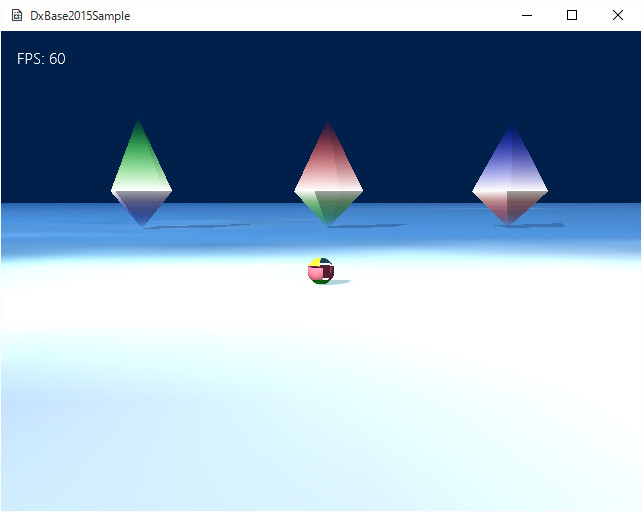

図4008a
この画面は、実は、Sample406で実装したのと同じものが描画されています。
//カスタム描画コンスタントバッファ構造体
struct CustomDrawConstantBuffer
{
Matrix4X4 World[3];
Matrix4X4 View;
Matrix4X4 Projection;
Vector4 LightDir;
Vector4 Param; //汎用パラメータ
CustomDrawConstantBuffer() {
memset(this, 0, sizeof(CustomDrawConstantBuffer));
};
};
cbuffer SimpleConstantBuffer : register(b0)
{
float4x4 World[3] : packoffset(c0);
float4x4 View : packoffset(c12);
float4x4 Projection : packoffset(c16);
float4 LightDir : packoffset(c20);
float4 Param : packoffset(c21);
};
typedef VertexShaderInput GeometryShaderInput;
#include "SimpleInc.hlsli"
GeometryShaderInput main(VertexShaderInput input)
{
//ジオメトリシェーダーに渡す変数
//入力をそのまま出力する
GeometryShaderInput vertexShaderOutput
= (GeometryShaderInput)input;
return vertexShaderOutput;
}
#include "SimpleInc.hlsli" [maxvertexcount(9)] void main( triangle GeometryShaderInput input[3], inout TriangleStream< PixelShaderInput > output ) { for (uint count = 0; count < 3; count++){ for (uint i = 0; i < 3; i++) { PixelShaderInput element; //頂点の位置を変換 float4 pos = float4(input[i].pos.xyz, 1.0f); float4 Col; if (pos.y > 0){ switch (count){ case 0: Col = float4(1.0f, 0.0f, 0.0f, 0.0f); break; case 1: Col = float4(0.0f, 1.0f, 0.0f, 0.0f); break; case 2: Col = float4(0.0f, 0.0f, 1.0f, 0.0f); break; default: Col = float4(1.0f, 1.0f, 1.0f, 1.0f); break; } } else if (pos.y < 0){ switch (count){ case 0: Col = float4(0.0f, 1.0f, 0.0f, 0.0f); break; case 1: Col = float4(0.0f, 0.0f, 1.0f, 0.0f); break; case 2: Col = float4(1.0f, 0.0f, 0.0f, 0.0f); break; default: Col = float4(1.0f, 1.0f, 1.0f, 1.0f); break; } } else{ Col = float4(1.0f, 1.0f, 1.0f, 1.0f); } //ワールド変換 pos = mul(pos, World[count]); //ビュー変換 pos = mul(pos, View); //射影変換 pos = mul(pos, Projection); //ピクセルシェーダに渡す変数に設定 element.pos = pos; //ライティング用に法線をワールド変換して設定 element.norm = mul(input[i].norm, (float3x3)World[count]); //頂点色を設定 element.color = Col; //頂点を追加 output.Append(element); } //一つの三角形をストリームに送る output.RestartStrip(); } }
[maxvertexcount(9)]
void main(
triangle GeometryShaderInput input[3],
inout TriangleStream< PixelShaderInput > output
)
//頂点を追加
output.Append(element);
//一つの三角形をストリームに送る
output.RestartStrip();
void CustomDrawOctahedron::Draw(){
//中略
//コンスタントバッファの設定
CustomDrawConstantBuffer cb1;
//行列の設定(転置する)
cb1.World[0] = Matrix4X4EX::Transpose(PtrT->GetWorldMatrix());
Matrix4X4 Left = Matrix4X4EX::Translation(-5.0f, 0, 0);
Left = PtrT->GetWorldMatrix() * Left;
cb1.World[1] = Matrix4X4EX::Transpose(Left);
Matrix4X4 Right = Matrix4X4EX::Translation(5.0f, 0, 0);
Right = PtrT->GetWorldMatrix() * Right;
cb1.World[2] = Matrix4X4EX::Transpose(Right);
//中略
//シェーダの設定
pID3D11DeviceContext->VSSetShader(VSCustomDraw::GetPtr()->GetShader(), nullptr, 0);
pID3D11DeviceContext->GSSetShader(GSCustomDraw::GetPtr()->GetShader(), nullptr, 0);
pID3D11DeviceContext->PSSetShader(PSCustomDraw::GetPtr()->GetShader(), nullptr, 0);
//インプットレイアウトの設定
pID3D11DeviceContext->IASetInputLayout(VSCustomDraw::GetPtr()->GetInputLayout());
//コンスタントバッファの設定
ID3D11Buffer* pConstantBuffer = CBCustomDraw::GetPtr()->GetBuffer();
pID3D11DeviceContext->VSSetConstantBuffers(0, 1, &pConstantBuffer);
pID3D11DeviceContext->GSSetConstantBuffers(0, 1, &pConstantBuffer);
pID3D11DeviceContext->PSSetConstantBuffers(0, 1, &pConstantBuffer);
//中略
}